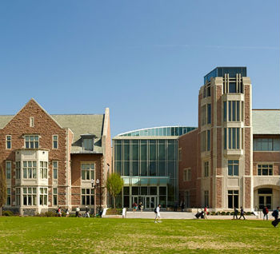
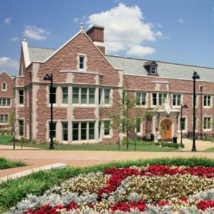

What Different Programs are Available and What They Are For
At Wash U there are four main schools that an undergraduate student can enter. The Olin School of Business, The School of Arts and Science, The Sam Fox School of Design and Visual Arts, and The School of Engineering and Applied Science. These four different schools offer a wide variety of programs and class. Picking a major and classes can seem overwhelming at first. However, the purpose of this site is to give you information about these schools and the programs that they are offering to students so that you will be able to find what interests you faster and do spend more time doing what you want to do in school.
Olin Business School
The Olin Business School will prepare its students for the world of business b The Business School Students have a wide variety of majors to choose from. Including but not limited to:
Some general requierments that all students in the Business School must take are
* if you are are transfer student you may subsitute MGT 100 for Business Strategy or Competitive Industry Analysis
A full list of courses that one needs to take and courses that are availible to students is on the Olin website in the link below
Arts And Sciences
The School of Arts and Sciences offers a huge variety of majors and minors. The posssible major programs range from drama to french to physics. This school is best for those students who are not yet completly sure which direction they want to take in their education and are trying to explore many options. They will be given this opportunity because the School of Arts and Sciences by encourages students to take classes outside of their inteded major and to explore many different classes when trying to decide what major they want to pursue. Possible majors include but are not limited to:
and many more
Some possible classes that one might take in the School of Arts and Sciences are:
For a full list of possible majors and minors please visit the School of Arts and Sciences Website in the link below.
Sam Fox School of Art
If you are a student who loves to create and work on projects in art and design then the Sam Fox School of Art and Design might be the place for you. Two undergraduate schools exist in the school. The College of Art and The College of Architecture.
possible programs to pursue in this school would be:
Possible classes that students can take in this school include :
For more information about the Sam Fox School of Design and Visual Arts visit the link below.
Washington University School of Engineering and Applied Science
In the School of Engineering and Applied Sciences Students will have the opportunity to work on projects and get hands on experience in the area of their study by completing these projects in those classes. Programs that Students can pursue in this school include the following.